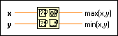

Max & Min Function
Owning Palette: Comparison Functions
Requires: Base Development System
Compares x and y and returns the larger value at the top output terminal and the smaller value at the bottom output terminal. This function accepts time stamp values if all inputs are time stamp values. If the inputs are time stamp values, the function returns the later time at the top and the earlier time at the bottom. You can change the comparison mode of this function.
The connector pane displays the default data types for this polymorphic function.

 Add to the block diagram Add to the block diagram |
 Find on the palette Find on the palette |